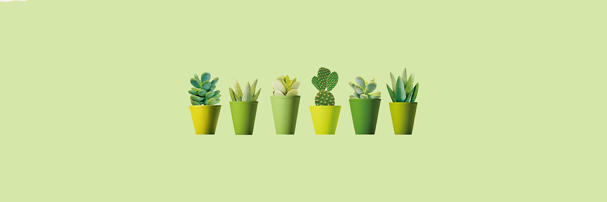
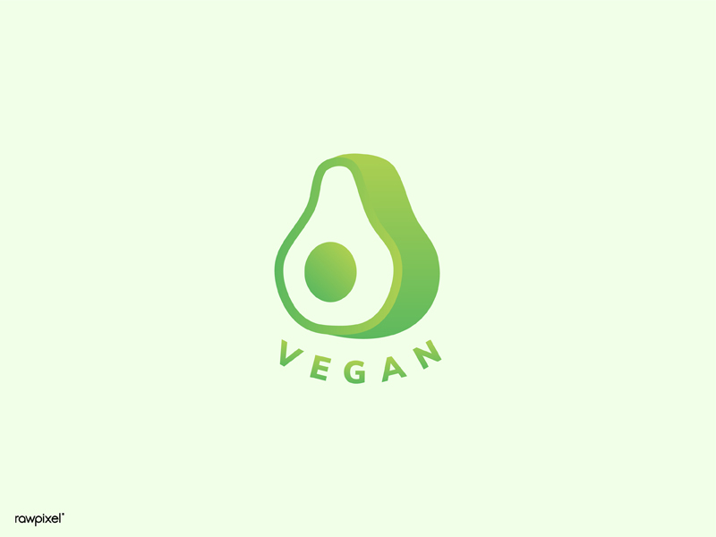
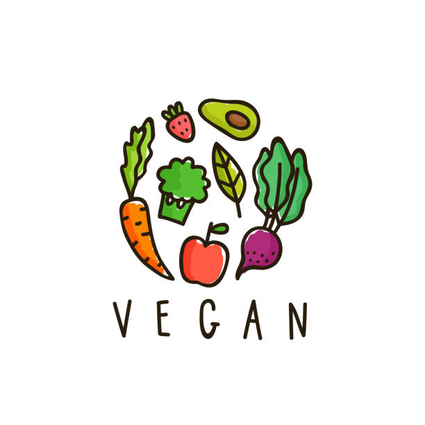

About Us
The Seeking Vegan offers the Internet’s most comprehensive and accurate source of vegan information on every topic, with expanding coverage and updates happening. All our key content is easy to find, as you will find relevant information on each page. For more specialized content, check out our page devoted to blogs and feel free to write your own piece that other people can gain new information from. And if you still can’t find what you’re looking for, our vegan info directory contains every single reference page we’ve published.
Why Vegan?
A vegan lifestyle prevents a tremendous amount of animal slaughter and suffering. It offers a potent way to shrink our environmental footprint, especially in regard to climate change. And a well-planned vegan diet can fuel the highest levels of fitness, while reducing our risk of various chronic diseases. Plus, the food is insanely delicious and it becomes more widely available every year.
Animals
Animals are sentient beings. They feel emotions, can suffer, and their lives matter to them. People are animals, too, so it should come as no surprise that, like us, other animals can experience pleasure and joy, despair and fear, and a host of other emotions, too. And like us, animals want to eat, live and raise their young without being harmed. But the mass production of animals harms them in more ways than we often acknowledge. There is, of course, the physical pain, of teeth and tails being clipped, horns burned off and ear tags puncturing flesh, but there is also the overwhelming suffering of life spent in a cage, or standing on broken bones, or having milk taken through infected teats. And all this is routine on British farms. What of the emotional toll? The dairy cow who grieves for her young, as calf by calf they are taken from her so that their milk can be sold for human consumption. The hen who is not permitted to keep her eggs, let alone hatch out her chicks, and can only watch as they roll away. The ewe and her lamb bleating for one another, long after the young sheep has been sent away for fattening. Being vegan is being kind. And isn’t that the kind of world we want?
Health
The reason so many people are going vegan? Research shows that health is now the second biggest driver. More and more people are ditching animal products in order to combat specific health problems. Others report general improvements in energy and vitality, and exclaim that they’ve ‘never felt better’. Stories of successful vegan athletes and sports stars are on the increase, and plant-based living is regularly profiled in health and wellness publications. The British Dietetic Association even confirms: ‘well-planned vegan diets can support healthy living in people of all ages’.
Environment
Being vegan is the best way we can protect our planet Going vegan is the ‘single biggest way’ we can reduce our environmental impact, according Oxford University researchers. This is because eating a plant-based diet can cut our greenhouse gas emissions, reduce pollution and water usage, prevent deforestation and save wild animals from extinction.
How to Become Vegan
Switching to a vegan diet is easier than you would ever expect—just a little reading puts you halfway there. Let’s begin by looking at how to construct a smart overall approach. The most obvious way to become vegan is to focus on eliminating animal products from your diet.
Top 3 Vegan Myths
1. But where do you get your protein?
The most common misconception out there is that you have to consume meat in order to get enough protein. This is simply not true. There may be protein in meat, but that doesn’t mean that it doesn’t exist anywhere else. In fact, vegans simply do what cows, pigs, sheep and chickens do; we go to the source.
2. Does tofu and soya contain oestrogen and lower testosterone?
Soya has no known effect on testosterone levels in men. Soya beans contain isoflavones, which are members of a group of compounds called phytoestrogens. Because isoflavones bind to the same receptors in the body as oestrogen, a misconception has built up (about soya). The bottom line is that isoflavones are not the same as oestrogen, and do not have the same effect as oestrogen.
3. What’s wrong with eating honey? Don’t bees make it naturally?
Most vegans believe the honey is not there for us to use, and it is exploitative to buy, sell and farm the bees for our benefit. Also, even the most careful beekeeper can’t avoid killing some bees in the process of harvesting honey. So when there are many alternatives available such as maple syrup, agave and various other sweeteners, there seems no reason to use bees. Furthermore, bees are currently under threat, which is very worrying as their existence is necessary for the pollination of our vegetable crops. Some people have argued that farming bees for honey is therefore beneficial – but a vegan might argue instead that we should provide assistance to bees ‘free of charge’, i.e. without going on to raid their hives and use their food. After all, don’t they already help us enough?
